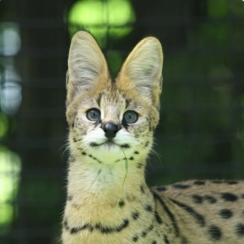
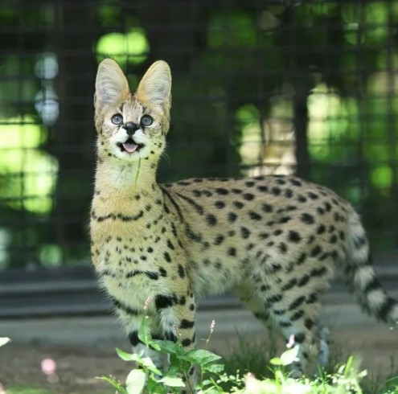

但是牠們主要還是仰賴那對大大的耳朵定位獵物，然後 ㄉㄨㄞ~ 到定點攻擊，再 ㄉㄨㄞ~ 回原點防守。
長長的脖子和腿，方便藪貓從草叢頂端偷看，所以牠們常常在草叢裡面穿梭移動。
但是一樣都是四肢長的貓咪，獵豹很會跑步，藪貓卻很會跳。
若將貓咪的四肢類比作人類的腿並簡化作三個部位：大腿、小腿和腳ㄚㄚ。
按比例來說，獵豹的大小腿比較長（而小腿又比大腿長8 ），得以邁開較大的步伐，加快跑速。藪貓則是因為腳ㄚㄚ長，離開地面時可以釋放跳躍所需的巨大能量。
另一方面，獵豹需要在高速中保持平衡，雲豹需要在樹上自由來去，牠們都擁有長長的尾巴。但是藪貓只要會ㄉㄨㄞ就好了，所以尾巴不用那麼長。
 